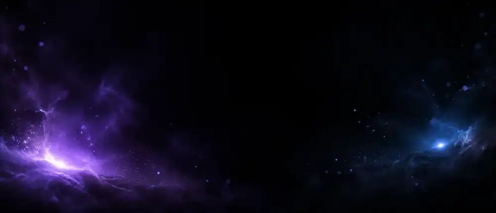
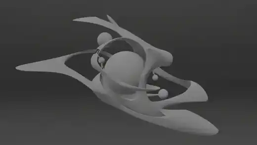

(01)
Motion Design
Brand films, title sequences, product animation and social content.
I shoot it — then make it unreal.
Fashion photography, motion, 3D and AI, from capture to final frame.


Every project starts the same way — a light, a lens, a first frame. What follows is whatever the idea needs: a camera, a render farm, a diffusion model, or all three at once. The tools keep changing. The frame is the point.
A selection of brand films, product visualisation, real-time and AI-driven work from the last few years.
Editorial portraits, fashion campaigns and films — lit and shot in studio, then pushed further in grade, CGI and AI. The same eye that builds the render sets the light.
Your final photography section will use your own full-resolution editorial images rather than generated stand-ins.
View photography ↗Brand films, title sequences, product animation and social content.
Cinema 4D, Redshift, Unreal Engine, character workflows and product visualisation.
Editorial portraits, campaigns and fashion films — shot, directed and graded in studio.
ComfyUI, AI image and video, character consistency and generative workflows.
AI-assisted pipelines, automation systems and experimental visual tooling.
Experiments that never made it to a client. Procedural motion, ComfyUI workflows, real-time tests and things that broke halfway through.